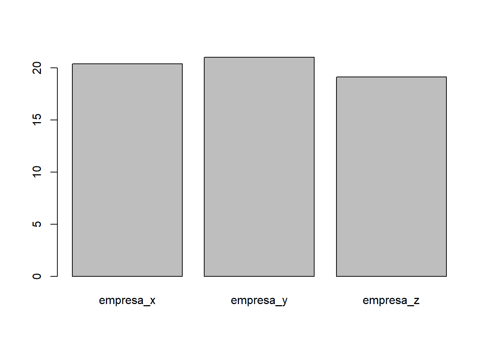
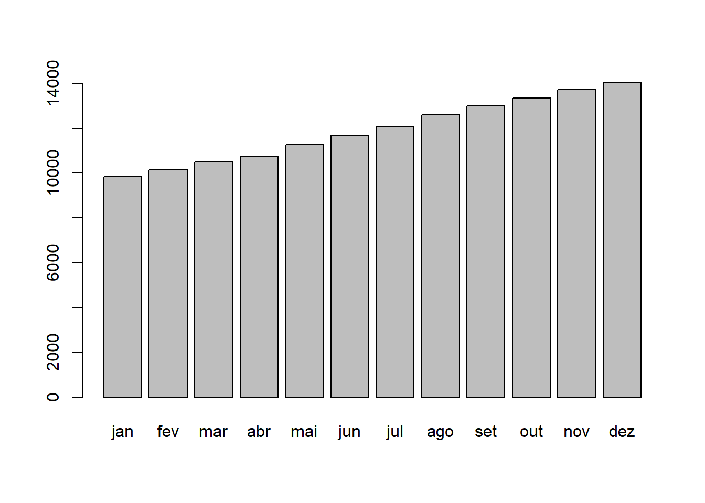
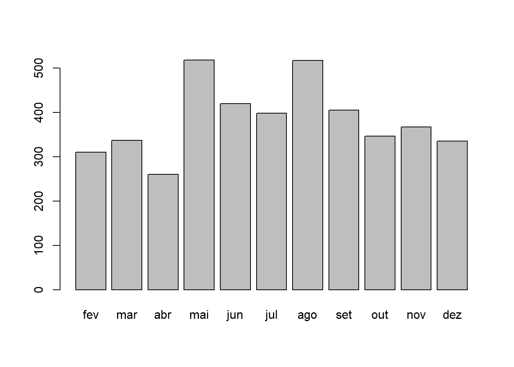

1 Aula 1
1.1 O que é o R?
Manipulção de dados, cálculos, exibição de gráficos.
Existem muitos softwares de estatística, mas o R é um dos mais populares.O R é um software gratuito, o que justifica a sua escolha. Mas além disso, a comunidade é muito ativa, desenvolvendo muitos pacotes - inclusive para econometria e finanças. O R não é tão amigável quanto o gretl: não existem menus para escolher como estimar. Entretanto, ele é muito mais flexível. Assim, o R tem ganho cada vez mais espaço entre aqueles que fazem econometria e finanças.(Coutinho, 2018)
O R é um software livre de estatística1 (software livre para computação estatística e construção de gráficos que pode ser baixado e distribuído gratuitamente de acordo com a licença GNU.)2, que funciona em diversos sistemas operacionais: GNU Linux,MicrosoftWindows,Mac OS X e outros. O aprendizado do R é difícil no início devido à necessidade de se adaptar à sua lógica de funcionamento, se acostumar com a estrutura dos seus documentos de ajuda e memorizar alguns comandos básicos. É preciso bastante perseverança e motivação para aprender os comandos básicos, e disposição para ler as páginas de ajuda e os manuais. Entretanto, depois de um certo tempo, ele possibilita que se trabalhe com grande produtividade e, o que é mais importante, eficácia. (Aquino, 2014)
Apenas ler esse texto talvez não ajude, acompanhe-o fazendo os cálculos no R.
Para um entendimento melhor sobre sofwtare de analise de dados recomendo a leitura de “The Popularity of Data Analysis Software - by Robert A. Muenchen” o artigo mostra os sofwtares mais usados por caso. exemplo: os mais usados para artigo acadêmico: SPSS, SAS, R; os mais usados para trabalhos analiticos: Java, Sas, Pynthon.
1.2 Instalando R
Pesquisando no google “R programing”. um dos primeiros resultados é o site https://www.r-project.org/. Acesse este site e siga as instruções. Ou já pesquise direto “download r”.
Depois instale uma interface visual chamada Rstudio para não ficar sofrendo trabalhando simplesmente com o interpretador de linha de comando. Pesquise no google “Rstudio”. O R Studio é uma IDE (Integrated Development Enviroment), que facilita muito a vida na hora de programar - especialmente dando sugestões de comandos e mostrando quais variáveis estão salvas no ambiente do R.
A interface do R Studio mostra 4 espaços diferentes: no canto esquerdo superior, existe uma tela chamada source (se ela não estiver lá, tente usar ctrl + shift + n para abrir); a direita dela, o ambiente; no canto inferior esquerdo, está o console; e no canto inferior direito está uma tela multiuso, que deve vir com as abas plot, files. Cada uma dessas será explicada, por alto, nesta seção
A que mais nos interessa, em um primeiro momento, é o console. Nele, você pode passar comandos direto para o R. Digitando 2 + 2 nele e clicando em enter, o resultado deve aparecer na tela. Em geral, é nele que você vai trabalhar. Entretanto, escrever código muito longos no console é muito ruim. O console é desorganizado, não permite salvar o código passado para ele para ser usado mais tarde e não permite com que você corrija erros com facilidade. O source serve justamente para escrever um código longo - uma função ou uma simulação, por exemplo - que pode ser executado no console. Para isso, basta selecionar o conteúdo e dar ctrl + enter ou chegar no fim da linha e usar ctrl + enter.
A tela do canto direito inferior é uma “geleia geral”: a aba plots é onde os gráficos que faremos vão aparecer; a aba files permite você ver arquivos em diferentes pastas do computador. Estas são as abas mais importantes e que mais serão usadas. Em cima desta tela, há a tela environment, que mostra as variáveis que foram criadas e estão disponíveis para o R usar.
1.3 O R como calculadora
O forma de uso mais básica do R é usá-lo como calculadora. Os operadores matemáticos básicos são: + para soma, - subtração, * multiplicação, / divisão e ^ exponenciação.
Além dos matemáticos temos os operadores lógicos como > maior que, < menor que, >= maior ou igual a, <= menor ou igual a, & E, | OU, == igual a, ! não, != Diferente de.
Digite as seguintes operações no source do Rstudio: Para executar o codigo utilize Ctrl+ENTER, se você estiver digitando no console basta apenas o ENTER.
2+2## [1] 42*2## [1] 42/2## [1] 12-2## [1] 02^2## [1] 4Use parênteses para separar partes dos cálculos, por exemplo, para fazer a conta 4+16, dividido por 4, elevado ao quadrado:
((4+16)/4)^2## [1] 25A notação básica de operações algébricas, como a aplicação hierárquica de parênteses, também pode ser utilizada, Note que somente os parênteses podem ser utilizados nas expressões matemáticas. As chaves (“{}”) e os colchetes (“[]”) têm outras funções no R.
1.4 Funções do R:
O R tem diversas funções que podemos usar para fazer os cálculos desejados. O uso básico de uma função é escrever o nome da função e colocar os argumentos entre parênteses, por exemplo: função(argumentos). função especifica qual função irá usar e argumentos especifica os argumentos que serão avaliados pela função. Não se assuste com esses nomes, com um pouco de pratica eles se tornarão triviais.(Landeiro, 2011)
1.4.1 exemplo 1
Considerando que a média setorial seria uma boa aproximação, você quer determinar a taxa de retorno do seu negócio. Empresas comparáveis com a sua, atuando no mesmo ramo,mesma linha de produtos, fornecedores e mesmo perfil de clientes, apresentam as seguintes taxas de retorno:
- Empresa x taxa de retorno é 20,40% ao ano.
- Empresa y taxa de retorno é 21,02% ao ano.
- Empresa z taxa de retorno é 19,13% ao ano.
A taxa média de retorno para o segmento onde opera sua empresa é qual?
Observando que as taxas são semelhantes, podemos fazer uma média aritmética simples. É uma aproximação, porém serve para compararmos com a taxa fornecida também pelo modelo CAPM.
#Criando o vetor segmento que contém os rendimentos das empresas do setor
segmento <- c(empresa_x=20.40, empresa_y=21.02, empresa_z=19.13)
barplot(segmento)
#calculando a taxa média de retorno do setor
mean(segmento)## [1] 20.18333No R o sinal de #(serquilha) é usado para inserir comentários, é o mesmo que dizer: “a partir do # existem apenas comentários”. O R não lê o que vem após o #. Observe que qualquer texto após o caractere # é ignorado pelo R e esta característica é utilizada para inserir comentários no script que ajudarão o pesquisador a entender o próprio código se precisar retornar a ele alguns meses após tê-lo escrito.(Aquino, 2014)
O R é case-sensitive, isto é, ele diferencia letras maiúsculas de minúsculas, portanto A é diferente de a. O separador de casas decimais é ponto “.”. A vírgula é usada para separar argumentos (informações). Não é recomendado o uso de acentos em palavras (qualquer nome que for salvar em um computador, não só no R, evite usar acentos. Acentos são comandos usados em programação e podem causar erros, por exemplo, em documentos do word e excel).(Landeiro, 2011)
Logo abaixo quando formos falar de objeto explico o que é vetor.
O comando <- (sinal de menor e sinal de menos) significa assinalar (assign). Indica que tudo que vem após este comando será salvo com o nome que vem antes. É o mesmo que dizer “salve os dados a seguir com o nome de.(Landeiro, 2011)
A letra c significa concatenar (colocar junto). Entenda como “agrupe os dados entre parênteses dentro do objeto que será criado” neste caso no objeto segmento.(Damaceno, 2018)
mean = media = S/n onde S: soma dos termos, n: número de termos. Observe que mean é uma função genérica para media aritmética e o argumento utilizado foi o vetor segmento que continha 3 empresas. Para visulaizar o que uma função faz utilize uma interrogação antes do nome da função.exemplo: ?mean
Para criar o gráfico utilizei a função barplot() que cria gráfico de barras horizontais ou verticais.
observe que é possível atribuir nomes aos elementos.
1.4.2 exemplo 2
João tinha um dinheiro aplicado e uma vez por mês olhava o saldo da conta: jan - 9839, fev - 10149, mar - 10486, abr - 10746, mai - 11264, jun - 11684, jul 12082, ago - 12599, set - 13004, out - 13350, nov - 13717, dez - 14052.
- calcule o ganho de cada mês neste período.
#criando o vetor que contém os saldos da conta de joão
saldos <- c(jan=9839,fev=10149,mar=10486,abr=10746,mai=11264,jun=11684,jul=12082,
ago=12599,set=13004,out=13350,nov=13717,dez=14052)
#visualizando os saldos em um gráfico
barplot(saldos)
#calculo do ganho mensal
ganho <- diff(saldos)
#visualizando o ganho mensal em um gráfico
barplot(ganho)
Olhe que criei o objeto leituras atribuindo a ele os meses e seus respectivos valores, e na hora do cálculo do consumo mensal utilizei a função diff() que retornou a diferença de leitura entre um mês e o consecutivo. diff() tem a particularidade de retornar como resultado um vetor de tamanho igual ao comprimento do vetor de entrada, menos uma posição.
- Qual foi o ganho máximo e o mínimo?
# 2. Consumos máximos e mínimos
#Com dois comandos
max(ganho)## [1] 518min(ganho)## [1] 260#ou simplesmente:
range(ganho)## [1] 260 518- Qual a média, mediana e variância dos ganhos?
#3. Média, mediana e variância do consumo
mean(ganho)## [1] 383median(ganho)## [1] 367var(ganho)## [1] 6476.21.4.3 Algumas funções básicas úteis:
exponencial - exp()
logaritmo natural - neperiano - log()
raiz quadrada - sqrt()
expoente - ** ou ^
fatorial - factorial()
extrair o módulo - abs()
somatorio - - sum()
produtorio - prod()
cosseno - cos()
tangente - tan()
seno - sin()
Saber a parte inteira de uma divisão - %/%
Saber o resto da divisão - %%
maximo - max()
minimo - min()
variancia - var()
desvio padrão - sd()
mediana - median()
pi = 3.141593
Inf - infinito
NaN - indeterminado (Not a Number), normalmente resultado de uma operação matemática indeterminada
NA - indeterminado (Not Available), normalmente caracterizando uma observação perdida (missing value)
1.5 TIPOS DE VARIÁVEIS
conforme (Aquino, 2014) “Durante uma análise de dados, precisamos lidar com diferentes tipos de variáveis. A seguir estão listados os tipos mais comuns, com o nome utilizado no R para se referir a eles entre parênteses:
Numéricas (numeric): Números inteiros ou reais, como idade, renda, número de filhos.
Datas (Date): São um tipo especial de variável numérica.
Categóricas (factor): Variáveis qualitativas, ou seja, características dos indivíduos para as quais não é possível atribuir um valor numérico, como sexo, religião, estado civil, opinião sobre algum tema. É possível agrupar os indivíduos em categorias e contar quantos indivíduos pertencem a cada categoria, mas se, por exemplo, um indivíduo afirma ser católico, e outro, protestante, não podemos, com base nessas afirmações, considerar um mais religioso do que o outro.
Categóricas ordenáveis (ordered): Tipo de variável categórica cujas categorias podem ser hierarquizáveis, como grau de escolaridade, alguns tipos de respostas a perguntas de questionário. Se à pergunta “Qual o papel do governo?”, as opções de resposta forem “O governo deve mandar em tudo”, “O governo deve controlar algumas coisas” e “Não precisamos de governo”, poderíamos considerar aqueles que optaram pela primeira opção adeptos de uma ideologia mais estatizante do que aqueles que escolheram a terceira opção.
Texto (character): Características puramente individuais que não podem ser utilizadas para categorizar os indivíduos. Geralmente aparecem nos bancos de dados apenas para ajudar em análises qualitativas e não estatísticas. Exemplo: o nome dos candidatos num banco de dados de resultados eleitorais. Em alguns casos, os textos são passíveis de categorização, como as respostas a uma pergunta aberta. Neste caso, seria preciso manualmente recodificar as respostas abertas numa nova variável contendo um número limitado de categorias.
Booleanas (logical): Variáveis cujos valores podem ser VERDADEIRO ou FALSO; no R, TRUE ou FALSE."
1.6 Objetos do R (O que são?):
Conforme explicado por (Landeiro, 2011) “existem muitos tipos de objetos no R que só passamos a conhecê-los bem com o passar do tempo. Por enquanto vamos aprender os tipos básicos de objetos.”
Lista que Landeiro apresenta como os tipos básicos:
a) vetores: uma seqüência de valores numéricos ou de caracteres (letras, palavras).
matrizes: coleção de vetores em linhas e colunas, todos os vetores dever ser do mesmo tipo (numérico ou de caracteres).
dataframe: O mesmo que uma matriz, mas aceita vetores de tipos diferentes (numérico e caracteres). Geralmente nós guardamos nossos dados em objetos do tipo data frame, pois sempre temos variáveis numéricas e variáveis categóricas (por exemplo, largura do rio e nome do rio, respectivamente).
listas: conjunto de vetores, dataframes ou de matrizes. Não precisam ter o mesmo comprimento, é a forma que a maioria das funções retorna os resultados.
funções: as funções criadas para fazer diversos cálculos também são objetos do R.(Damaceno, 2018) No decorrer da apostila você verá exemplos de cada um destes objetos.
Para visualizar o tipo de objeto ou da variável utilize class().
Para uma leitura mais aprofundada sobre os tipos de objetos e definições da linguagem R leia o manual “R language definition” e o “An introduction to R” páginas 7 a 12, ambos disponíveis no menu “HELP”, “Manuais em PDF”. Clique em help no menu do R e em Manuais (em PDF) para abrir os arquivos.
1.6.1 Acessar valores dentro de um objeto [colchetes]
Caso queira acessar apenas um valor do conjunto de dados use colchetes []. Isto é possível porque o R salva os objetos como vetores, ou seja, a sequencia na qual você incluiu os dados é preservada.
Se quiser excluir valores de um vetor, utilize o mesmo método só que com o sinal de - na frente.
E para alterar utilizamos a regra geral objeto[index] <- valor.
1.6.2 exemplo:
#calculando retorno anual da empresa w utilizando os retornos mensais
#digamos que os retornos mensais da empresa w seja de 19, 18, 17, 19, 18, 18, 17,
#22, 21, 20, 20, 17.
#atribuindo retornos mensais a empresa w
empresa_w_mensal <- c(19, 18, 17, 19, 18, 18, 17, 22, 21, 20, 20, 17)
#Acessando valores dentro do objeto
empresa_w_mensal[8] #Extrai o oitavo valor## [1] 22empresa_w_mensal[c(12,1,2)] #Extrai o primeiro, o segundo e o decimo segundo.## [1] 17 19 18#Excluindo valores
empresa_w_mensal[-8] #Exclui o oitavo valor## [1] 19 18 17 19 18 18 17 21 20 20 17empresa_w_mensal[-c(12,1,2)] #Exclui o primeiro, o segundo e o decimo segundo.## [1] 17 19 18 18 17 22 21 20 20#substituindo valores
empresa_w_mensal[12] <- 27 #Substitui o decimo segundo valor por 27
empresa_w_mensal[c(11,12)] <- c(23,24) #Substitui o decimo primeiro e o decimo
#segundo valor por 23 e 24.
empresa_w <- mean(empresa_w_mensal) #calculando retorno medio anual fazendo media
# dos retornos mensais e atribuindo esse valor a empresa_w
empresa_w #visualizando o valor da empresa_w.## [1] 19.666671.7 Matrizes
Chamamos de matriz uma tabela de elementos dispostos em linhas e colunas. Por exemplo, ao recolhermos os dados referentes a receita, lucro e patrimônio de um grupo de quatro empresas, podemos dispô-los em uma tabela:
empresa_a <- c(receita=10, lucro=2, patrimonio=100)
empresa_b <- c(receita=8, lucro=1, patrimonio=120)
empresa_c <- c(receita=11, lucro=4, patrimonio=85)
empresa_d <- c(receita=10, lucro=1, patrimonio=94)As funções cbind() (juntar colunas) e rbind() (juntar linhas) juntam vetores formando matrizes, ou seja, uma forma retangular de representação dos dados em que eles estão distribuídos em linhas e colunas. Cada vetor fornecido como argumento para a função cbind()se torna uma coluna da matriz resultante; com a função rbind(), cada vetor se torna uma linha3:
cbind(empresa_a, empresa_b, empresa_c, empresa_d)## empresa_a empresa_b empresa_c empresa_d
## receita 10 8 11 10
## lucro 2 1 4 1
## patrimonio 100 120 85 94rbind(empresa_a, empresa_b, empresa_c, empresa_d)## receita lucro patrimonio
## empresa_a 10 2 100
## empresa_b 8 1 120
## empresa_c 11 4 85
## empresa_d 10 1 94Vamos agora salvar a matriz resultante da função cbind() no objeto empresas, poderiamos usar a função colnames() para atribuir nomes às colunas, e a função rownames() para atribuir nomes às linhas:
empresas <- cbind(empresa_a, empresa_b, empresa_c, empresa_d)
class(empresas)## [1] "matrix"Para acessar ou extrair dados de uma matrix, também podemos utilizar índices, como nos vetores. A diferença é que agora são necessários dois vetores de índices, um para as linhas e outro para as colunas, separados por uma vírgula. Assim como fizemos com os vetores, também podemos usar nomes para localizar elementos de uma matriz4.
empresas[3, ] # seleciona a terceira linha## empresa_a empresa_b empresa_c empresa_d
## 100 120 85 94empresas[ , 2] # seleciona a segunda coluna## receita lucro patrimonio
## 8 1 120empresas[1, 2] # seleciona o primeiro elemento da segunda coluna## [1] 8Qual a média de receita do setor?
mean(empresas[1,]) #media de todos os valores da primeira linha## [1] 9.75Analogamente ao que fizemos com os vetores, podemos usar os índices para mudar valores de elementos específicos de uma matriz.
veja que class(empresas) retornou como resultado matrix, o comando class() informa qual o tipo do objeto
1.8 Exercicios:
1- (Landeiro, 2011) Suponha que você marcou o tempo que leva para chegar a cada uma de suas parcelas no campo. Os tempos em minutos foram: 18, 14, 14, 15, 14, 34, 16, 17, 21, 26. Passe estes valores para o R, chame o objeto de tempo. Usando funções do R ache o tempo máximo, mínimo e o tempo médio que você levou gasta para chegar em suas parcelas.
1.1- (Landeiro, 2011) Ops, o valor 34 foi um erro, ele na verdade é 15. Sem digitar tudo novamente, e usando colchetes [ ], mude o valor e calcule novamente o tempo médio.
2- Você consegue prever o resultado dos comandos abaixo? Caso não consiga, execute os comandos e veja o resultado:
x<-c(1,3,5,7,9), y<-c(2,3,5,7,11,13)
- x+1
b)y*2
c)length(x) e length(y)
x + y
y[3]
y[-3]
3.Considerando que a média setorial seria uma boa aproximação, você quer determinar a taxade retorno do seu negócio. Empresas comparáveis com a sua, atuando no mesmo ramo,mesma linha de produtos, fornecedores e mesmo perfil de clientes, apresentam as seguintestaxas de retorno:
a)Empresa A taxa de retorno é 12,00% ao ano
b)Empresa B taxa de retorno é 14,00% ao ano
c)Empresa C taxa de retorno é 13,00% ao ano
A taxa média de retorno para o segmento onde opera sua empresa é?
4 - Você pretende comprar um novo computador daqui a um ano. Hoje você tem R$ 5.000,00 e espera que o computador custe R$ 6.000,00 na data da com pra. Sabendo que o banco remunera suas aplicações à taxa de 1,8% ao mês, quanto você terá de dinheiro no tempo previsto?
5 - Determine o valor de resgate de uma aplicação realizada na caderneta de poupança há três anos. Considere o valor aplicado de R$ 3.000,00 e a taxa média de rendimento de 0,84% ao mês.
6 - Um aplicador deseja obter $ 70.000 no prazo de dois anos. Determine quanto deve ele aplicar hoje em um fundo que rende 3,2% ao quadri-mestre.
1.9 Alguns comandos básicos úteis:
Limpar o Console - crtl + l
Criar Comentário - #
mostrar o valor armazenado na variável - print(nome da variável)
mostra o que está no ambiente, mostra as variáveis existentes - ls()
remover os objetos - rm(nome da variável) - caso tenha mais de um objeto basta separar por virgula.
Saber o tamanho do vetor / numero de observações/elementos - length()
saber se é vetor - is.vector()
Nomear linha - rownames()
Nomear Coluna - colnames()
Para visualizar onde está a pasta do R - getwd()
Lista os arquivos da pasta R - dir()
Colocar os valores de um vetor em ordem crescente - sort()
Colocar os valores de um vetor em ordem decrescente - sort(x, decreasing=TRUE)
1.10 Referências
Vinícius Damaceno, Codificando louco!, 23 de julho de 2018. acesso em 24 de abril de 2019 https://lvdamacenoblog.wordpress.com/2018/07/23/1264/
Victos Lemes Landeiro, Introdução ao uso do programa R, 04 de março de 2011, Acesso em 24 de abril de 2019 https://cran.r-project.org/doc/contrib/Landeiro-Introducao.pdf
Daniel Coutinho, R: Uma Introdução para economistas, 17 de outubro de 2018, acesso em 24 de abril de 2019 https://danmrc.github.io/R-para-Economistas/index.html
Jackson Alves de Aquino, R para cientistas sociais, 2014, acesso em 24 de abril de 2019 http://www.uesc.br/editora/livrosdigitais_20140513/r_cientistas.pdf
Introdução à Linguagem R para Pós-Graduandos em Ecologia e áreas afins - http://ecologia.ib.usp.br/bie5782/doku.php?id=start
Peter Dalgaard, Introductory Statistics with R, 2008
R Core Team (2018). R: A language and environment for statistical computing. R Foundation for Statistical Computing, Vienna, Austria. URL https://www.R-project.org/.